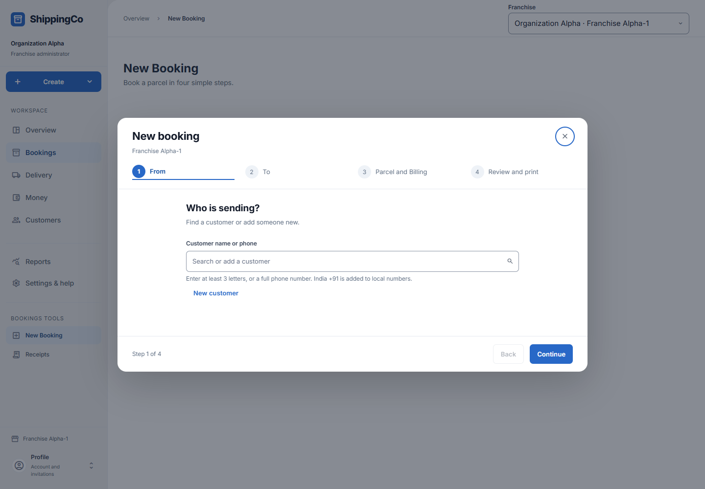
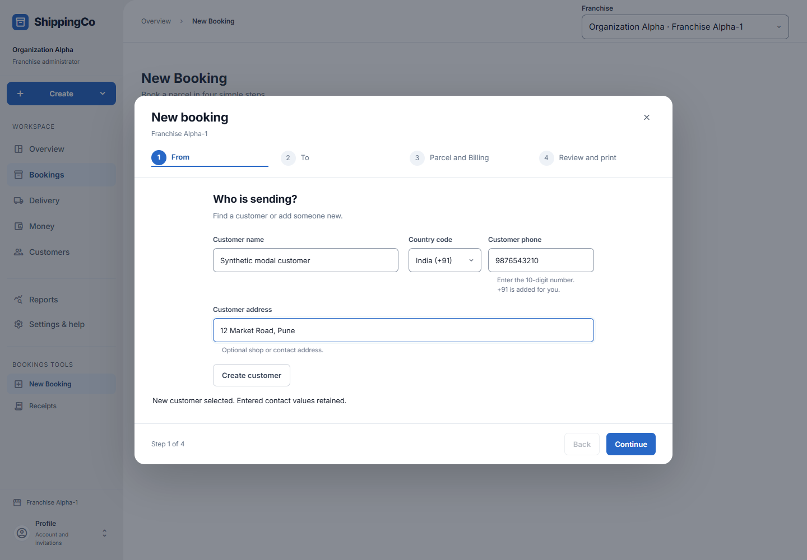
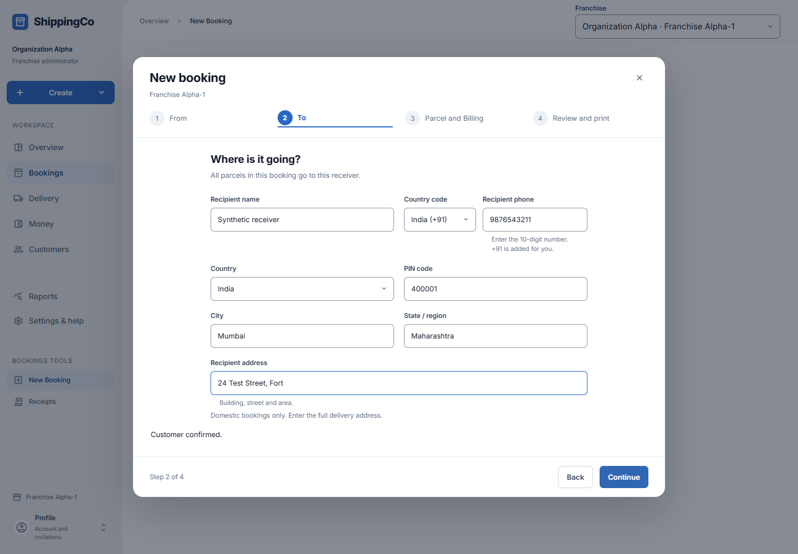
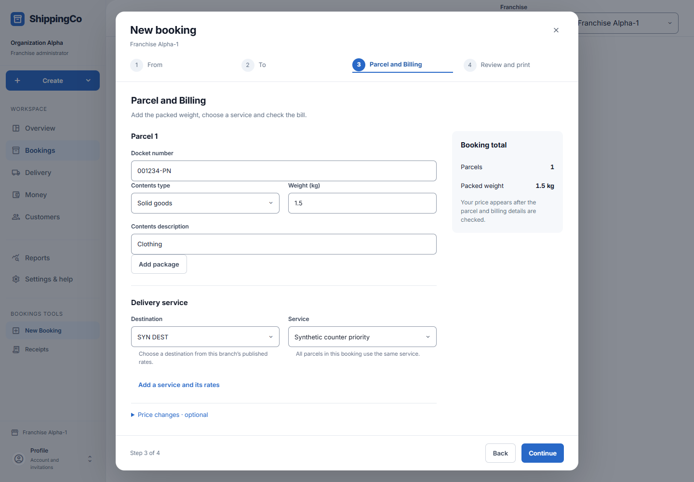
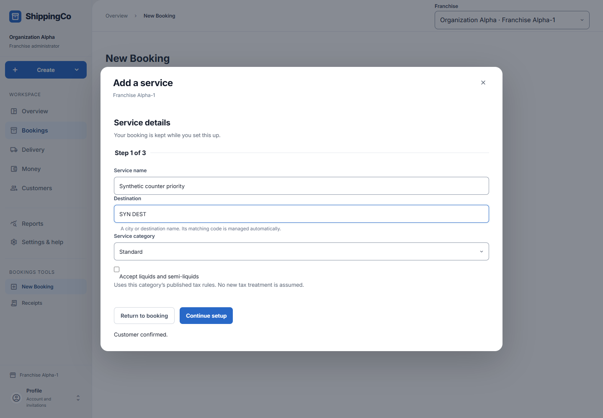
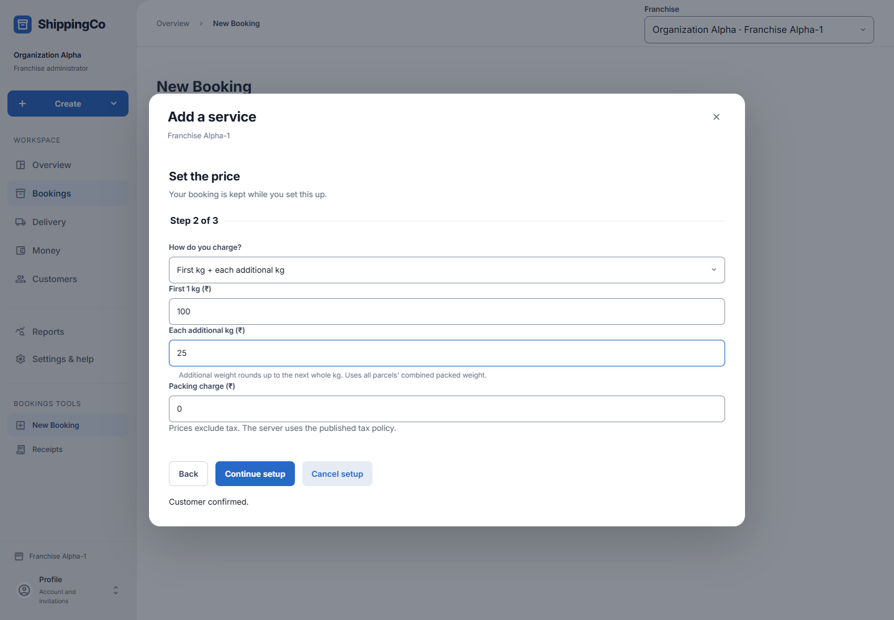
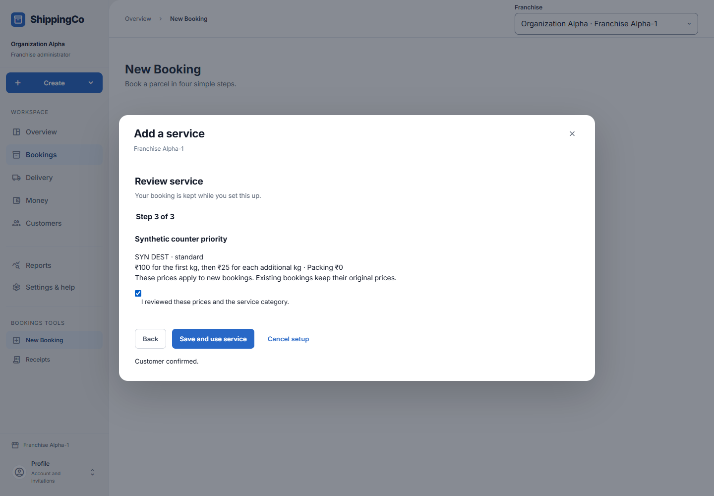
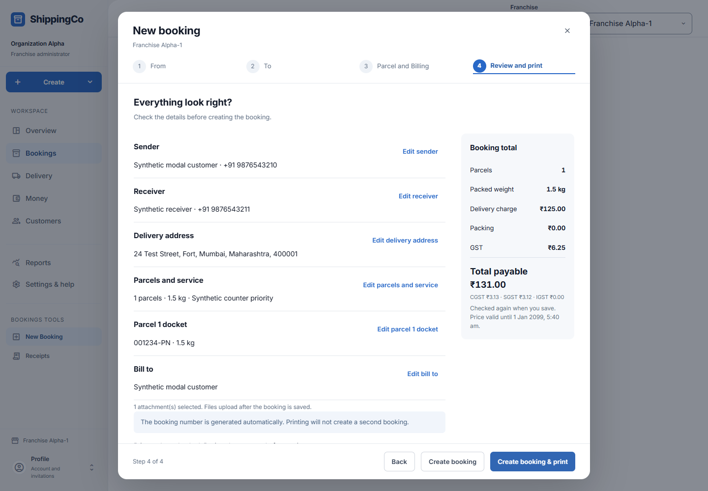

Create a booking
Create a booking in four steps: From, To, Parcel and Billing, then Review and print.
Before opening the form
- Choose the correct branch. Its prices and tax policy must be published and active.
- Keep the sender’s contact details, receiver’s full address and packed parcel weight ready.
- Open Create in the sidebar and choose New booking. A centred form opens; on a small screen it fills the screen.
- Use Continue to move forward and Back to review earlier entries. The form keeps the entered details while you move between steps.
- A booking can contain several parcels, but they all go to the same receiver and use one destination and service.
- This flow is for domestic bookings within the app’s supported tax setup. International bookings and unsupported tax cases cannot be completed here.
Step 1 - From: choose the sender
- Customer search: type a name or use the customer’s phone number to find a saved customer. Check the name and phone before selecting.
- If the person is not listed, choose the Add option for the entered name. The new customer form opens inside the booking.
- Customer name: enter the person or business sending the parcel. This is required.
- Customer phone: choose the country code and enter the number, or paste a complete number starting with +. This is required.
- Customer address: enter a useful shop or contact address if available. This is optional and does not arrange a pickup.
- Select Create customer. Wait for the customer details to be confirmed before continuing.
- For a saved customer, Change selects someone else. Edit details lets you correct the customer and save the change.
- If someone else changed the customer, refresh and deliberately use the latest details. Do not continue with the wrong person.


Step 2 - To: enter the receiver
- Recipient name: enter the person who should receive the parcel.
- Recipient phone: enter their reachable phone number with the country code.
- Country: the current booking flow uses India.
- PIN code: enter the six-digit delivery PIN code. It must not start with zero.
- City: enter the delivery city or town.
- State / region: enter the delivery state or region.
- Recipient address: enter the building, shop or flat number, street and area. Do not rely on the PIN code alone.
- All these receiver and address details are required in this form. Every parcel added to this booking uses this receiver.

Step 3 - Parcel details
- Docket number: type or scan the number on the parcel label. Each parcel needs its own number. Keep any leading zeros.
- Start with Parcel 1. Contents type identifies whether it contains solid goods, documents, liquid, semi-liquid or another type.
- Weight (kg): weigh the parcel with its packaging and enter that packed weight. For example, 0.5 means 500 grams. Use up to three decimal places.
- Contents description: briefly say what is inside, such as Cotton shirts or Printed documents. This is required, up to 200 characters.
- Liquid quantity (litres): appears for liquid or semi-liquid contents. Enter the quantity as well as the packed weight.
- Litres do not replace kg. The service price still uses the packed weight.
- Select Add package for another parcel. Enter that parcel’s own contents and weight. Remove package removes only that extra draft parcel.
- You can add up to 50 parcels. The price calculation uses their combined packed weight.
- Scroll inside Parcel and Billing to reach the billing and attachments sections below the parcel and service fields.

Step 3 - Choose the service
- Destination: choose the destination covered by the available rate setup. It is a pricing destination, not a substitute for the receiver’s full address.
- Service: choose the service the customer has agreed to buy. The named service is shown again during review.
- If the service is missing, an authorised owner or administrator can open Add service inside the booking.
- An operator who cannot publish rates should ask an administrator to add the service. Do not use an unrelated service just to continue.
- Price changes - optional contains Freight override and Override reason. Use this only when you are authorised to change the calculated freight.
- A monthly account’s agreed rates are a separate choice. The app does not combine a named retail service with a negotiated account rate.
Inside Add service - Details, prices and review
- Service name: enter the name staff and customers should recognise, such as Local priority.
- Destination: enter the city or destination name. The matching internal code is managed automatically.
- Service category: select Standard, Express or Same city. Existing tax rules for that category are used.
- Accept liquids and semi-liquids: enable this only if your business accepts them for this service.
- Select Continue setup to enter prices.
- How do you charge?: choose Flat charge per booking or First kg + each additional kg.
- For a flat charge, enter Charge per booking (₹). For a weight-based charge, enter First 1 kg (₹) and Each additional kg (₹).
- Additional weight rounds up to the next whole kg. All parcels’ packed weights are added together before this calculation.
- Packing charge (₹): enter the packing amount, including zero when no packing charge applies. These service prices exclude tax.
- Continue setup and check the service name, destination, category and prices. Tick the review confirmation, then select Save and use service.
- The booking details remain while service setup is open. Return to booking or Cancel setup goes back without using an unfinished service.
- If this is the first service, the app also publishes a first rate card with a one-year period, 10-minute quotes and no ordinary price override. Read and confirm this before saving.
- The first rate card may take a short time to become active. Wait for the saved result. If prompted, use Retry same service request.
- A separate active tax policy is still required. Service setup does not choose a new tax treatment for you.



Step 3 - Billing and tax details
- Bill-to account: keep the booking’s customer for a normal sale, or select a linked monthly account when that customer has agreed account billing.
- The selected account may have a credit limit, hold or overdue restriction. Choosing it does not remove those restrictions.
- Payment choice: choose Pay later or Received at counter. This records the booking choice; it does not by itself record money.
- Payment method: when Received at counter is chosen, select the actual method offered, such as Cash or UPI.
- GST registration: select whether the service customer is GST registered.
- For a GST-registered customer, enter Billing state and GSTIN. Use their real billing details, not the parcel destination by guesswork.
- Parcel handed over in: choose the state where the parcel is actually handed over for this service.
- Tick I checked these billing and handover details with the customer only after checking those facts.
- The app now records the selected customer reference and this confirmation automatically. You do not type service-recipient or tax-evidence IDs in this booking form.
- Select Calculate booking price. Review delivery charge, packing, GST and total payable.
- Changing a relevant customer, service, parcel or billing detail can require the price or confirmation to be checked again.
Step 3 - Attachments
- Add supporting files in Attachments before you save: for example, an invoice PDF or a photo of the packed parcel.
- Supported files are PDF, JPEG, PNG, MP3, WAV and MP4.
- Each file must be nonempty and no larger than 8 MiB. A booking can have up to 10 files, with a combined limit of 32 MiB.
- Selected files stay on this device until the booking is saved. Ready to upload after booking does not mean the file has been stored yet.
- Remove a draft file if you selected the wrong one. Files are checked after upload before they become available.
- If a file fails after the booking saves, retry that attachment. Do not create the booking again.
- Closing or changing scope can discard files that have not been uploaded. Read the leave/discard message before confirming.

Step 4 - Review and print
- Check the sender, receiver, full address, parcel count and combined weight.
- Check the actual named service and who will be billed. A monthly account should show the intended account name.
- Review delivery charge, packing, GST and final total. Use the Edit links to correct a section.
- Check that the selected attachments are the right files. They upload after the booking is saved.
- Create booking saves the booking. Create booking & print saves it and then loads the saved receipt for printing.
- Check each parcel’s docket number and weight. The booking reference is created automatically.
- Wait for the saved confirmation. A saved booking is not automatically a completed delivery.

After saving
- The confirmation shows the parcel tracking numbers, booked total and outstanding amount at booking confirmation.
- If money was received, select Record received money and complete the actual receipt flow. See Money received for receiving account, amount and allocation details.
- Print booking receipt loads the saved receipt. A print failure does not undo the booking; retry printing instead of booking again.
- Wait for attachments to show their saved result. Retry failed uploads on this booking.
- Start another booking opens a fresh form when pending payment and file work is resolved.
- For a lost save response, use the same booking retry. For an expired price, calculate the price again. For an account restriction, resolve the account issue before continuing.